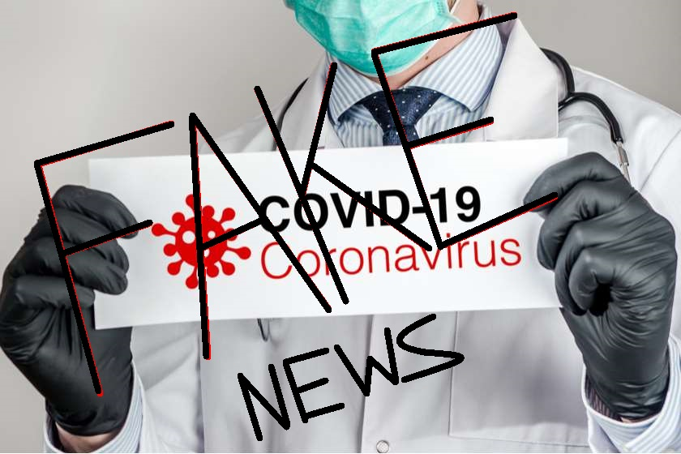

<!DOCTYPE html>
<head>
<style type="text/css">
 .large-text {color: blue 
   	font-size:24px }
    
   .title {
   	   font-size: 24px
   }
</head>
<body> <large-text>
<h1> COVID19 is F A K E </h1> </large-text>
<h4> მსოფლიო პოლიტიკამ, საკუთარი მიზნების განსახორციელებლად, ამ ეტაპზე გადაწყვიტა მთელი პლანეტის "დაბოლება", რაც ჩვენდა სამწუხაროდ გამოუვიდა. მაგრამ ყველაზე საინტერესო არის ის, რომ ეს ყველაფერი არის დიდი ტყუილი, მკვდრების მატება, ვირუსის გავრცელება და ა.შ.
<p> მინდა მოგიყვანოთ მაგალითი: პირადად მე, ნ.ც-ს შეხება მქონდა 2 დღით ადრე იმ ადამიანთან, რომლის შესახებაც ქართულმა მედიამ ორი დღის შემდგომ განაცხდა, რომ ამ ადამიანს დაუდგინდა კორონა ვირუსი. ნიუსამდე სამი დღით ადრე კი ჩემი მეგობარი იყო მასთან შეხვედრილი, თუმცა არც მას და მითუმეტეს არც მე ეს ვირუსი, რომელიც ექსპერტების თქმით მარტივად გადამდებია, არ გადაგვედო და არც ჩვენს გარშემომყოფებზე არ იქონია გავლენა. არადა მედიცინის ექსპერტები დარწმუნებით გვაუწყებდნენ, რომ ეს ფეიკ ვირუსი ხშირ შემთხვევაში გადადების შემთხვევაში, თავიდანვე თავს არ იჩენს, თუმცა ამის მერე მოგეხსენებათ დიდი დრო გავიდა.</p>
<p> ასევე დიდი ზეწოლა იყო ეკლესიაზე, რომ აღდგომის დღესასწაულზე ღამის ლიტურგია არ ჩაეტარებინათ საეკლესიო პირებს, თუმცა ჩვენმა უწმინდესმა, საქართველოს პატრიარქმა ილია მე-2-ემ სამების ტაძრის კარები მაინც არ დაუკეტა მოსახლეობას, ჩატარდა ლიტურგია, შეიკრიბა ხალხი და არავითარ ვირუსს არ ჰქონდა ადგილი.</p> </h4> </body>

<a href="file:///C:/Users/acer/Desktop/%E1%83%9B%E1%83%94%E1%83%A1%E1%83%90%E1%83%9B%E1%83%94%20HTML(2)/index.html">სრულად</a>
<p></p>


